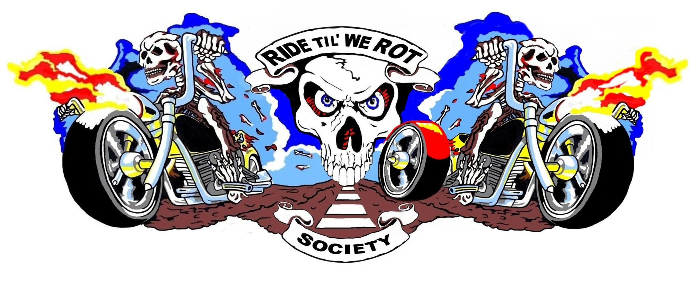

Website undergoing scheduled maintenance
We’re in the process of re-setting everything. Thanks for your patience.
Sorry for the inconvenience. Please check back a little later — we’ll be ready soon!

We’re in the process of re-setting everything. Thanks for your patience.
Sorry for the inconvenience. Please check back a little later — we’ll be ready soon!